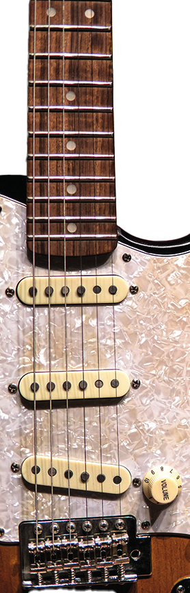

Nuevas formas de escuchar
Una pequeña historia que cambió el rumbo de los Beatles fue el hecho de que el productor musical tenía antiguos estudios de música clásica, se arriesgaron a proponer un cuarteto de cuerdas en la canción "Yesterday" y resultó en una combinación entre la melancolía que querían retratar de la canción y el sello que utilizaban los Beatles en sus composiciones. Para cuando grabaron "Sgt. Pepper's" (1967), ya utilizaban orquestas sinfónicas completas de 40 músicos para crear texturas experimentales y psicodélicas.
